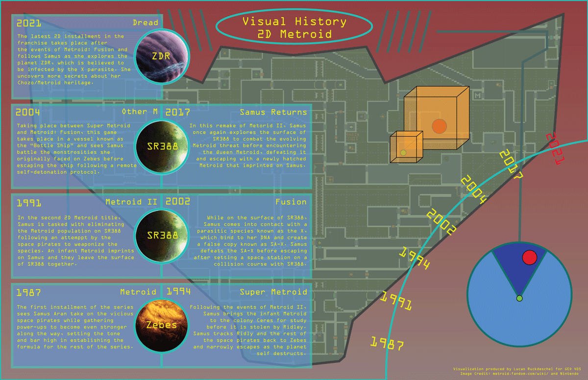
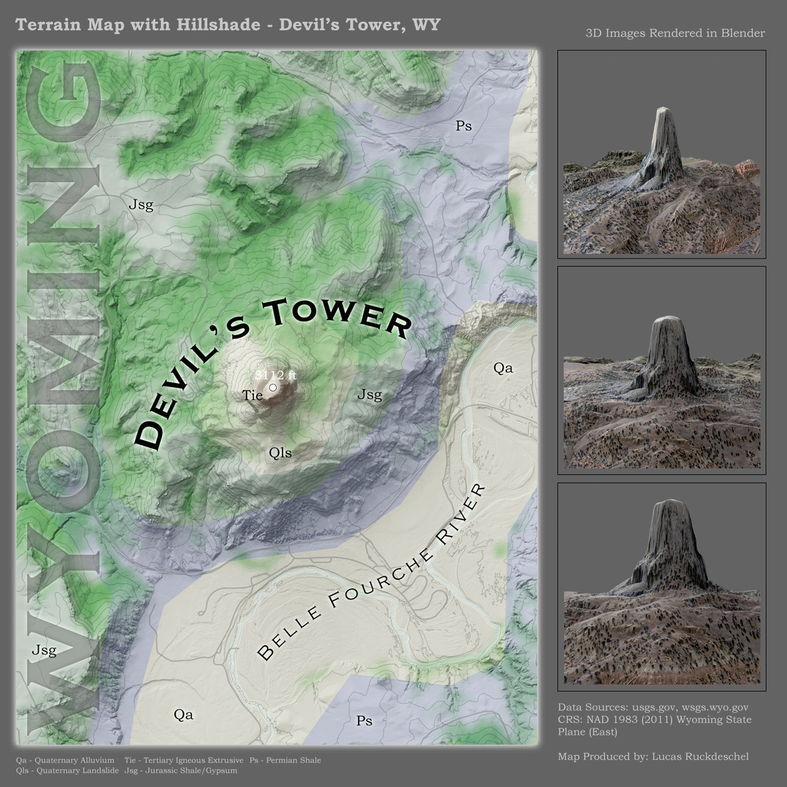

About
This webpage is a dedicated repository for some of my mapping
and carography efforts over the course of the 2023 and 2024 semesters during my time as a
geology and geography undergraduate at the University of Kentucky and serves as a
demonstration of my abilities to use adobe illustrator, photoshop, QGIS, and Visual Studio
Code to construct this gallery.
Projects

Metroid Map
This map was created to explain the narrative of the 2D Metroid games released by
Nintendo since the original 1987 release on the NES. As this series holds great sentimental value to me as someone
who grew up playing them, and with map exploration and development being integral to the primary gameplay, this
seemed like a natural fit for this project.

Devil's Tower
This map showcases my favorite national landmark, Devil's Tower. This monstrous intrusion
of columnar basalt stands out very prominently against the more muted topography of the surrounding Wyoming
countryside and to highlight the captivating visual nature of the structure itself, I used Blender to capture
3D isometric views of Devil's Tower in addition to the geologic map of the area.
Web Map
This map provides a setting for petroleum reclamation in the Western KY
Coalfield region of the state, to which I call home. The orange layer highlights the unplugged wells across
regions within the hexbins and the blue layer shows the plugged wells. Areas with a large number of unplugged
petroleum wells could prove potentially hazardous to the environment and people within those regions.